⚄
в планах
Первая игра
Идеи уже рисуем в скетчбуке. Как только начнём, расскажем здесь.

REC 00:00:00:00
Творческое объединение, где рождаются смешные ролики и фильмы, снятые прямо в играх, а ещё свои приложения и море хорошего настроения.
Снимаем ролики и фильмы прямо в играх: BeamNG.drive, Garry's Mod, Source Filmmaker. Наша основная стихия.
Уже вышел WinMosaic: он возвращает плиточный экран «Пуск» из Windows 8.1 в Windows 11.
Следующий шаг. Пока на бумаге, но если решимся, вы узнаете первыми.
новое с нашего YouTube-канала
Загружаем видео…
все ролики с канала @Chaosmasterstudio
Загружаем видео…
наши приложения и игры
Приложение, которое возвращает плиточный экран «Пуск» из Windows 8.1 в Windows 11. Открыть сайт WinMosaic →
Идеи уже рисуем в скетчбуке. Как только начнём, расскажем здесь.
брось кубик и получи идею для скетча
Кот-режиссёр снимает блокбастер в лифте, но актёры уехали на пятый этаж.
коротко о студии
ChaosMaster – Studio® — творческое объединение, где рождаются самые смешные видео, увлекательные фильмы и море позитива.
Все наши фильмы и ролики мы снимаем прямо в играх: BeamNG.drive, Garry's Mod, Source Filmmaker. Игра для нас и съёмочная площадка, и актёры, и декорации.
Мы любим дарить зрителям хорошее настроение и создаём контент, полный юмора, ярких персонажей и неожиданных сюжетов. А ещё делаем свои приложения: первое из них, WinMosaic, уже вышло.
Мы не боимся экспериментировать и придумывать новое, чтобы каждый зритель нашёл у нас что-то интересное. Мы постоянно развиваемся и смотрим, куда нас приведёт вдохновение.
нас трое, и этого хватает для хаоса
заходи в гости, пиши, смотри
Общаемся, делимся новостями, первыми показываем новые видео и приложения.
Вступить в Discord → YouTubeВсе наши ролики и фильмы. Подписывайся, чтобы не пропустить новое.
открыть канал →Для идей, сотрудничества и вопросов.